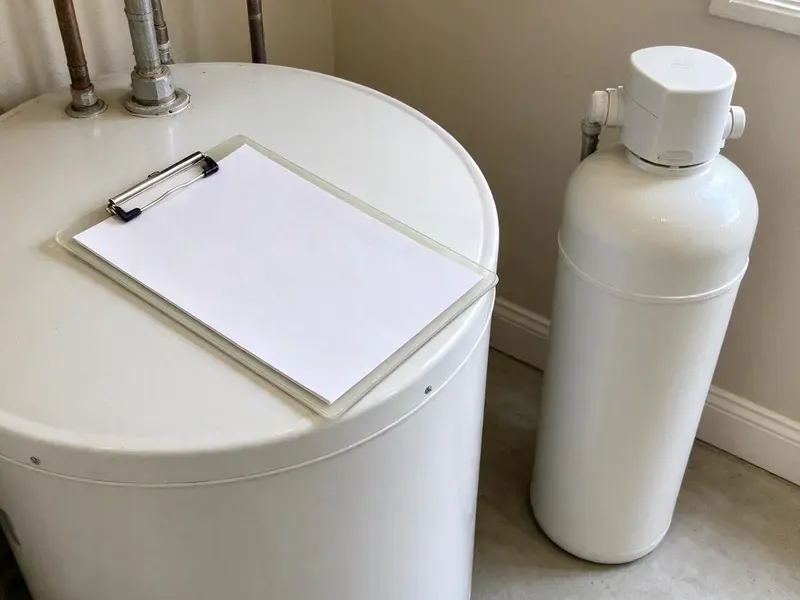

Drainage Services in St. Albans, WV
For dependable drainage services in St. Albans, WV, GJK Plumbing has you covered. We handle everything from routine clogs to complex system overhauls.
- Same-Day Drain Service
- Skilled Technicians
- Yard & Storm Drainage
- Licensed & Insured Plumbers

Dependable Drainage Solutions Are Here in St. Albans, WV.
We find out why water is backing up or pooling and give you a simple, written plan.
Your Local Team for Drainage Services in St. Albans, WV
GJK Plumbing provides comprehensive drainage services throughout St. Albans, WV, addressing everything from simple sink clogs to complex main sewer line blockages. Our skilled plumbers use tools like hydro-jetting and camera inspections to diagnose and resolve your drainage issues efficiently.
Our expertise includes:
- Modern sewer camera inspections
- Downspout tie-ins, dry wells and grading corrections near foundations
- Powerful Hydro-Jetting for Tough Clogs

Additional Plumbing Maintenance Services in St. Albans, WV
Our maintenance and specialty plumbing services in St. Albans, WV protect your home year-round and extend the life of every system.


Customers
Why Choose GJK Plumbing for Drainage Services in St. Albans, WV?
Good drainage protects your foundation, your landscaping and your plumbing all at once. We design solutions around how much water your lot really sees, not a one-size-fits-all kit.
- Advanced Tools, Our technicians use modern equipment like video inspection cameras and hydro-jetting machines for precise and effective solutions.
- Whole-Property View, We trace water from the roof and fixtures right down to the street or a dry well.
- Local Expertise, We understand the particular drainage challenges faced by homes in St. Albans, WV, including mineral buildup and tree root intrusion.
Citywide Coverage
GJK Plumbing proudly serves every neighborhood in St. Albans and the surrounding communities, bringing expert drainage services right to your doorstep. No matter where you are located within the St. Albans area, our team is ready to respond fast to your drainage needs.
Experienced Team
Our drainage technicians clear hundreds of lines each year and install yard systems that handle heavy downpours. They know the difference between a simple clog and a sagging or root-damaged line.
Safety-First Approach
We ensure that all drainage work complies with current building codes in St. Albans, WV, preventing potential hazards and protecting the long-term integrity of your plumbing system. Trust us for safe, compliant, and dependable service.
Trusted Certified St. Albans Plumbing Services Professionals
At GJK Plumbing, we take pride in providing licensed, certified plumbing services throughout St. Albans, WV. Backed by leading industry credentials, our experienced plumbers combine technical skill with genuine customer care. Whether it is repair, installation, or maintenance, we follow strict safety and quality standards to deliver long-lasting results you can trust.
Call Us Now PHCC Plumbing Contractor Recognition
PHCC Plumbing Contractor Recognition Better Business Bureau (BBB) Accreditation
Better Business Bureau (BBB) Accreditation Angi Certified Pro
Angi Certified Pro ISO 9001 Quality Management Certification
ISO 9001 Quality Management CertificationDependable Drainage Services in St. Albans, WV
Residential Drain Cleaning in St. Albans
Slow drains or recurring clogs in your home are more than a nuisance; they can signal bigger issues. Our residential drain cleaning service in St. Albans utilizes tools like augers and hydro-jetting to clear blockages from kitchen sinks, bathroom drains, and laundry lines. We tackle common culprits like grease buildup, hair, and soap scum, restoring full flow and preventing backups, which are especially common in older homes with aging pipe systems.

Dry Well Installation in St. Albans, WV
Where there is no place to discharge water on the surface, a dry well lets it soak into deeper soil. Dense clay or hardpan layers can block absorption, so we test the soil and dig through hardpan when needed. Some jurisdictions have rules on dry well registration and placement, and we follow them. A properly sized dry well with a sediment chamber can handle repeated heavy storms.
Main Sewer Line Clearing in St. Albans, WV
A blocked main sewer line can cause widespread backups throughout your home, usually due to tree root intrusion or sediment buildup. Our team uses powerful equipment, including hydro-jetting, to blast through tough obstructions and thoroughly clean your main sewer line. We can also inspect the line with a camera to identify the exact cause and location of the problem.
Storm Drain & French Drain Installation in St. Albans, WV
Sudden, heavy downpours make proper storm drainage crucial. Snowmelt combined with spring rain can raise rivers and groundwater, putting added pressure on foundations and drainage systems. We design and install effective storm drain and French drain systems in St. Albans, WV to divert excess water away from your foundation, preventing erosion and water damage. These systems are essential for managing runoff on properties with poor grading or soil that swells when wet, protecting your home's structural integrity.
Main Line and Sewer Drainage in St. Albans, WV
When several fixtures back up at once, the problem is most often in the main line to the city sewer or septic. Tree roots from mature shade trees and shrubs find their way into older clay and cast iron laterals. We clear the main through a cleanout and inspect it with a camera so you can see breaks, bellies or root intrusion. Repair options include spot repairs, lining or full replacement.
Channel and Trench Drains in St. Albans, WV
Driveways and patios that slope toward the house can send storm runoff straight into a garage or under a door. A channel drain with a grate catches that sheet flow before it reaches the building. We use durable polymer or concrete channels from brands like NDS and set them flush with the surface. The channel ties into solid pipe that carries the water to a proper outlet.
Downspout and Roof Drain Solutions in St. Albans
Gutters and scuppers concentrate a lot of roof water into a few points, often right next to the foundation. We connect downspouts to buried solid pipe and run it to pop-up emitters or a dry well well away from the house. Rocky, steep terrain is common across West Virginia, and many homes sit on hillsides where drainage and slope movement affect buried lines. Moving that water away also stops erosion that eats away at walkways and landscaping.

Sewer Line Repair & Replacement in St. Albans, WV
Issues with your main sewer line can lead to significant problems, including foul odors and widespread backups. Our sewer line services in St. Albans, WV begin with detailed camera inspections to accurately locate breaks, cracks, or tree root intrusions. We offer both trenchless repair options, like pipe lining or bursting, and traditional excavation methods, depending on the severity and location of the damage, limiting disruption to your property.
Drainage Services Near Me in St. Albans, WV
Looking for dependable drainage services near me in St. Albans, WV? GJK Plumbing is your local expert, providing fast and professional solutions for all your residential and commercial drainage needs. Our team is always ready to head to your location.
We are committed to being the go-to plumbing experts for all your drainage needs across St. Albans, WV. Our proximity allows us to respond quickly to emergencies and schedule routine services at your convenience, ensuring your plumbing system in top condition.
GJK Plumbing at a Glance
- Fully licensed plumbing team covering St. Albans, WV
- 24/7 emergency service with same-day scheduling
- Clear written estimates, no hidden fees
- 4.8-star rated by 832+ West Virginia customers
St. Albans Map
St. Albans Information
- Population
- 10,387
- Area codes
- Local
- Service area
- St. Albans and communities within 40 miles
- Nearby
- Nitro, Dunbar, Cross Lanes, South Charleston
Proper drainage services are critical for homes in St. Albans, WV, because shifting soil can damage underground pipes and sudden, intense rain can overwhelm inadequate drainage systems. Snowmelt combined with spring rain can raise rivers and groundwater, putting added pressure on foundations and drainage systems.
Expert Services
Trust our professionals for reliable GJK Plumbing solutions in St. Albans, WV.
Our Specialized Plumbing Services in St. Albans, WV
At GJK Plumbing, we provide a complete range of plumbing services across St. Albans, WV. From leak detection to full system installations, our team ensures fast, precise, and affordable service for both residential and commercial properties. Explore our core services below:


Here Is How Our Drainage Services Process Works in St. Albans, WV
At GJK Plumbing, we believe in a methodical approach to all drainage issues. Here is how we handle clogs and blockages to restore your plumbing.
Request a Quote
Start by calling us at (681) 223-3607 or filling out our online form to describe your drainage issue. We'll gather necessary details and schedule a convenient time for a service visit.
Diagnosis & Plan
Our technician will arrive on time to carefully inspect your drainage system, often using camera inspection. We'll explain the problem and present a clear, upfront estimate for the recommended solution.
Expert Service
Once approved, our team will perform the drainage service using specialized tools and techniques. We work carefully, adhering to all safety protocols and local codes.
Frequently Asked Questions About Drainage Services in St. Albans
The cost of drainage services in St. Albans, WV can range from $150 to $500 for a basic clog removal, but complex issues like main sewer line clearing or hydro-jetting can cost $400 to $800 or more. Factors include the severity of the clog, accessibility, and the tools required. We provide honest, transparent pricing before any work begins.
Minor drain cleaning usually does not require a permit. However, significant drain repairs, such as replacing a section of a main sewer line or extensive re-piping, usually require a plumbing permit from the local St. Albans building department to ensure compliance with local codes. Our team handles all required permitting.
Yes, GJK Plumbing stands behind the quality of our work. We offer warranties on our drainage services, including parts and labor. The specific warranty period can vary depending on the type of service performed, such as drain cleaning or sewer line replacement, and will be spelled out in your service agreement.
Watch for slow or gurgling drains, sewer odors, water pooling near the house after storms, soil erosion and cracks in walkways. Standing water in the yard for more than a day is another sign. Call us to have it looked at.
Most standard residential drain cleaning services, like clearing a sink or toilet clog, can be completed within 1 to 2 hours. More complex jobs, such as main sewer line clearing or hydro-jetting, may take 2 to 4 hours, depending on the severity and access of the blockage.
We commonly install and service quality sump pump brands such as Zoeller, Little Giant, Wayne, and Liberty Pumps. Our technicians can help you choose the best model for your specific needs, considering factors like horsepower, pump type, and reliability for West Virginia weather conditions.
Drain clearing comes with a service guarantee, and installations carry a workmanship warranty in writing. Products like NDS channel drains and pipe also have manufacturer warranties. We explain the terms before you sign off on the job.
Tree roots are naturally attracted to the moisture and nutrients found inside sewer lines. Even tiny cracks or loose joints in older pipes can allow roots to penetrate, growing larger over time and causing severe blockages and pipe damage. This is a common issue in plenty of established St. Albans, WV neighborhoods with mature trees.
What People Are Saying About Our Plumbing Experts?

Emily R.
I called GJK Plumbing for plumbing repair, and the technician was fast, polite, and thorough. They explained the problem clearly and fixed it the same day. I will definitely hire them again. Highly recommended!
Plumbing Repair · Dunbar, WV
Patricia H.
We had a slab leak that two other companies could not find. GJK Plumbing located it in under an hour, explained our options, and the price matched the quote to the dollar.
Slab Leak Repair · Cross Lanes, WV
Laura S.
I scheduled a water heater replacement, and the team made the process smooth and affordable. The new unit works perfectly, and they cleaned up after completing the job.
Water Heater Replacement · Charleston, WV
Daniel K.
A pipe burst at 11 pm and they actually answered. The plumber showed up within the hour, shut everything down, and had us back to normal the next morning. Could not ask for more.
Emergency Plumbing · St. Albans, WV
Mark T.
When our office needed drain cleaning, GJK Plumbing provided quick, reliable service. The plumber arrived on time and made sure every drain flowed perfectly before leaving. Very satisfied.
Drain Cleaning · South Charleston, WVSofia M.
Two new toilets installed in one visit, no mess left behind, and the tech even adjusted a faucet he noticed was dripping. Fair pricing and really friendly.
Toilet Installation · Dunbar, WV